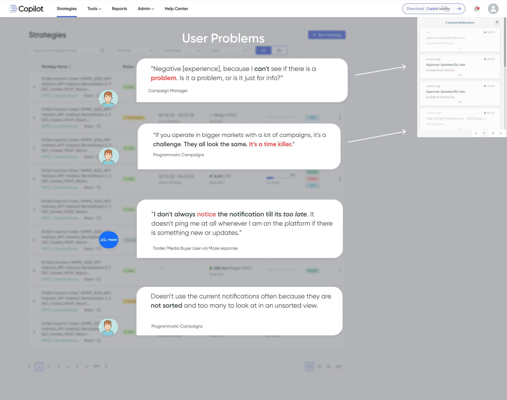
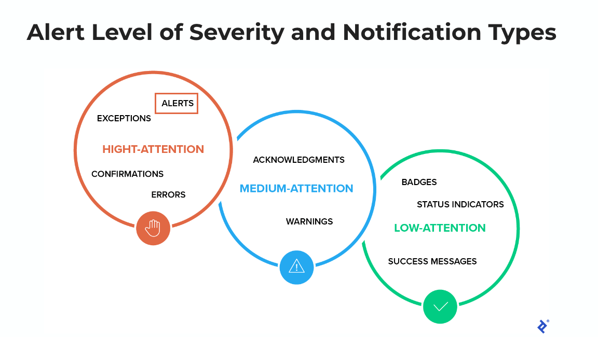

Copilot is an Xaxis-built AI technology that optimizes digital media investments towards real business outcomes. The web platform users lacking a positive user experience with the notifications.
I conducted evaluative and generative user research to improve the Copilot notifications user experence.
User Problem: The notifications in the Copilot web platform were the source of several support calls and tickets from unhappy users. The one person handling all of the support tickets was overwhelmed.
My role was to research how to improve the notifications experience for users, and by doing so will alleviate the one-person support team also.
User Route Options for Team Brainstorming
User Flow in FigJam based on product manager discussions with Engineering.
Several 🎨 design iterations in Figma.
3 Rounds of Research Reports
📊 📈 Maze Report
The first Discovery research stage revealed the different problems that users were experiencing with the old notifications. User Quotes in the image below are from User interviews and open-ended qualitative survey questions.
In addition to the primary research that I directly conducted, I also used secondary research sources to find out the best practices and UX patterns for notifications to help determine the new design.
Action-required notifications alert the user of an event that requires a user action. Action-required notifications are often urgent and should be intrusive. Source: Nielsen Norman Group Article - Indicators, Validations, and Notifications: Pick the Correct Communication Option
I don't always notice the notification till its too late. It doesn't ping me at all whenever I am on the platform if there is something new or updates.
- Trader User via Maze survey response
I used both primary and secondary research to back up my solution ideas to redesign the notifications.
My next step was to test my solution ideas with real Copilot platform users. In user testing, it is possible to accomplish two goals in one task. The task I created combines two usability goals: Discoverability and Usability.
I decided to use Maze to test the discoverability of the toast alert pop-up idea to see whether it would get user's attention as intended.
You have received a notification that your strategy spending has exceeded the budget limit. Navigate to find the relevant notification to take action.